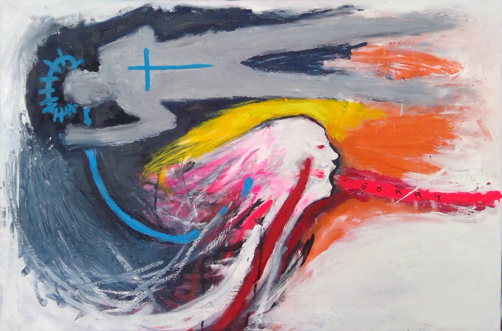

PIGSY Founding Artist
As I Say It
€4,500
- Medium
- Mixed Media on Canvas
- Materials
- Acrylic, Oil Paint, Spray Paint, Oil Pastels, Marker, Pencil and Glue on Canvas
- Size
- 54 × 81 × 5 cm (21.3 × 31.9 × 2.0 in)
- Year
- 2025
Gestures become syllables, every mark an unfinished sentence. Blues and oranges collide with shocks of neon pink, echoing the chaos of articulation. The figure stretches like a phrase breaking mid-breath. Created in isolation and meditation, As I Say It captures the threshold between expression and silence where truth trembles but still insists on being heard.
Enquire about this work
Your enquiry comes to PlotArt and is passed to PIGSY. PlotArt doesn't take payment: the artist arranges any sale with you directly.